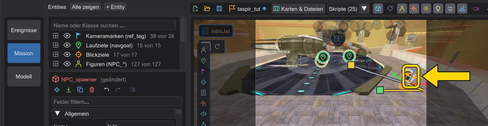
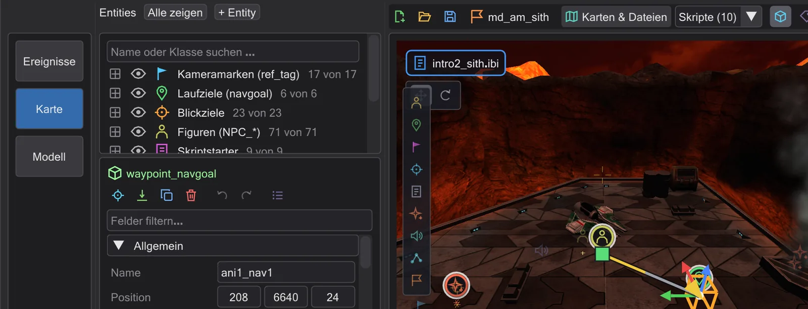
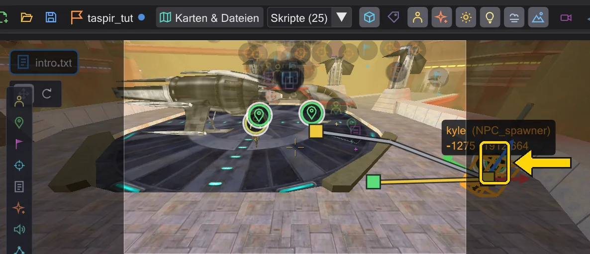

Eine Figur läuft
Eine Figur und ein Laufziel setzen, das Skript sie hinschicken lassen, dann den Weg auf der Karte ändern - gehen oder rennen, ein Punkt dazwischen.
Schritte#
- 1
Eine Figur setzen. Im Tab Mission die Kachel Figur (NPC_spawner) am linken Rand der Ansicht anklicken, dann auf den Boden klicken. Im Inspektor
NPC_typesetzen (der Knopf ... durchsucht alle NPCs des Spiels) und einen Name wiewalker.
Eine auf den Boden gesetzte Figur. - 2
Ein Laufziel setzen. Die Kachel Laufziel (waypoint_navgoal) anklicken und dorthin klicken, wo die Figur hin soll.

Das Laufziel. - 3
Das Skript sie hinschicken lassen. Rechtsklick auf die Figur in der Entity-Liste → affect-Block einfügen: ein Block
affect ( "walker", FLUSH )erscheint. Rechtsklick auf das Laufziel in der Liste → Als Laufziel einfügen (SET_NAVGOAL): die Zeile erscheint unter der gewählten - zieh sie in den affect-Block. Im Skript steht jetztaffect ( "walker", FLUSH ) { set ( SET_NAVGOAL, "..." ); }.
Der affect-Block mit dem Navgoal. - 4
Abspielen. Den Abspielknopf (▶) drücken: die Figur läuft, der Weg hinter ihr wird gelb. Ihre Zeile in der Zeitleiste zeigt den Lauf als Band.

Die Figur unterwegs. - 5
Rennen statt gehen. Rechtsklick auf den Endgriff des Wegs → Rennen (ab diesem Lauf).
SET_RUNNINGwird vor den Navgoal geschrieben, und die Figur kommt früher an.
Das Menü des Laufziels. - 6
Ein Punkt dazwischen. Die Zeitleiste mitten in den Lauf stellen, die Figur greifen und zur Seite ziehen: an diesem Augenblick entsteht ein neuer Navgoal, und die Figur läuft zuerst dorthin.

Ein neuer Punkt mitten im Lauf.


Mehr zu Wegen, Blickrichtung und Rückwärtslaufen: Figuren und Wege.